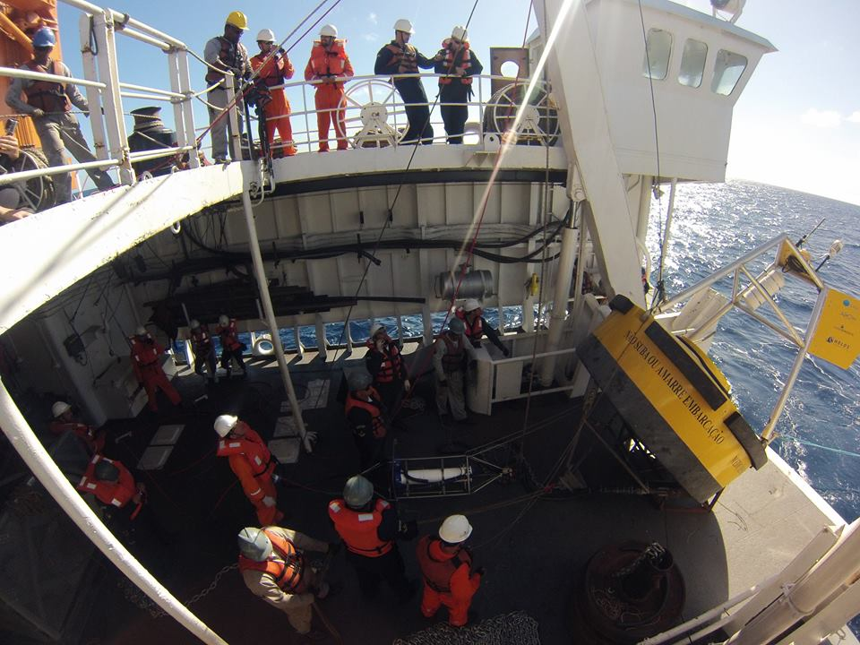
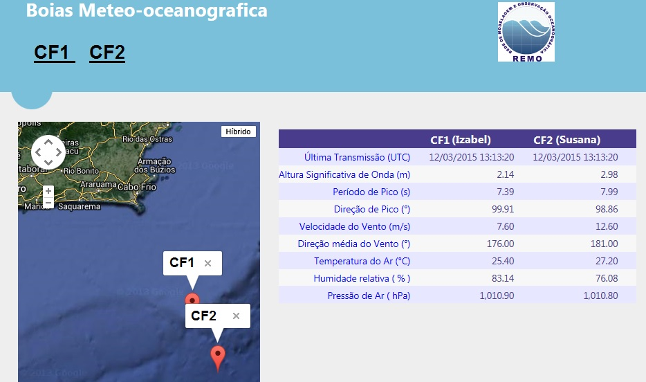

Notícias
Bóias Meteo-oceanográficas da REMO são lançadas pelo NOc Antares da Marinha do Brasil ao Largo da Costa Sudeste do Brasil
O NOc Antares da Marinha do Brasil lançou duas bóias da REMO em março de 2015. As bóias estão coletando e transmitindo dados atmosféricos e oceânicos. Elas estão equipadas com sensores para medir (i) ventos a 3 m; (ii) temperatura do ar a 2 m (iii) pressão atmosférica de superfície, (iv) umidade relativa na superfície; (v) altura significativa, período de pico e direção de pico de ondas na superfície; (vi) correntes até 100 m; e (vii) temperatura da água de 10 em 10 m até 100 m de profundidade. Esses dados serão em sua grande maioria transmitidos para o sistema GTS (Global Transmission System) e terão domínio público. Os dados poderão em breve ser acessados através da página da REMO www.rederemo.org, juntamente com as previsões oceanográficas de curto-prazo elaboradas operacionalmente pelo Centro de Hidrografia da Marinha do Brasil (CHM).
As bacias foram chamadas de CF1 e CF2, tendo em vista que estão próximas a Cabo Frio. Elas estão fundeadas em lâminha d'água de 300 m (CF1) e de 2000 m (CF2) nas posições geográficas -23,7703 W (CF1) e 
-24.1903 W (CF2).
Toda a estrutura fisica, incluindo seus componentes de transmissãoo, são nacionais. Os sensores são importados.
Essas bóias são um marco para a REMO e a Petrobras no seu papel de apoio ao desenvolvimento científico e tecnológico da oceanografia operacional no Brasil desde 2008.
